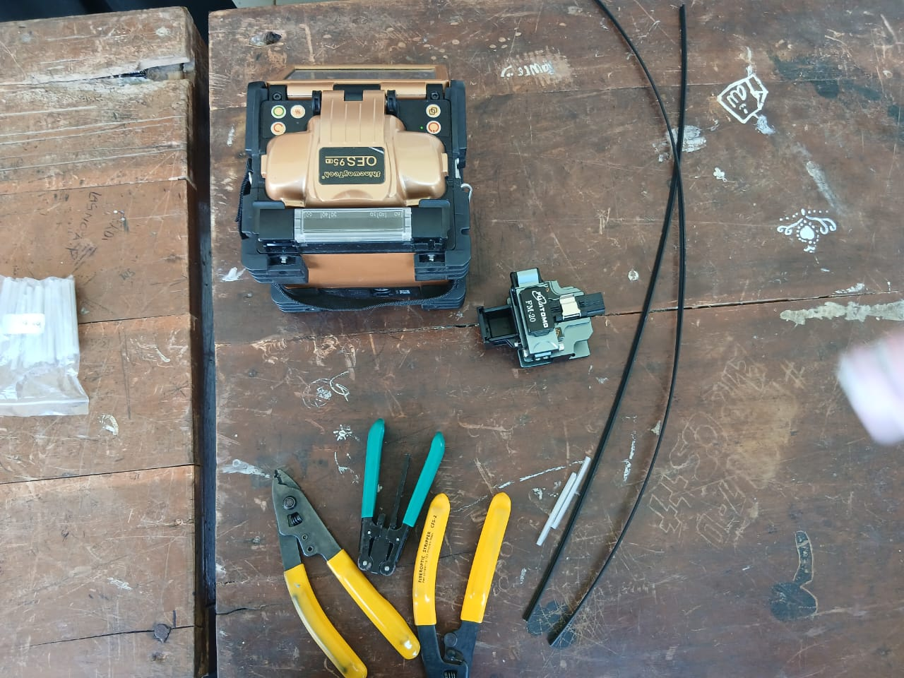

Laporan Langkah-Langkah Penyambungan Kabel FO
Alat dan bahan

- Kabel FO
- Splicer
- Cleaver
- Stripper
- Smufe
- Alkohol
- Tisu/kapas
- Tang
- Vsl
Langkah-Langkah Penyambungan
- pisahan outer jacket core menggunakan stripper
- kemudian kupas outer jacket core dengan miller
- setelah dikupas kemudian dikupas lagi nmenggunakan stripper agar bagian core terlihat
- bersihkan core menggunakan tisu/kapas yang sudah dibasahi dengan alkohol
- potong core mengunakan cleaver,dengan meletakkan fo di cleaver kemudian sesuaikan cladding dinomor 15,potong dengan mendorong boost
- setelah dipotong letakkan kabel fo di splicer sesuaikan core diantara dua paku
- tekan tombol power untuk menghidupkan splicer
- kemudian tekan tombol hijau untuk menyambunghkan 2 kabel fo,tunggu sampai terhubung di layar splicer
- setelah tersambung keluarkan kabel dari splicer,sesuaikan smufe untuk menutupi core
- masukan kabel yang sudah dilapisi smufe ketempat pembakaran,kemudian tutup pengaman pembakaran.
- setelah dikeluarkan dari pembakaran kabel fo sudah bisa digunakan
- setelah itu salah satu ujung dari kabel fo di kupas
- bersihkan core dengan tisu yang sudah dibasahi alkohol
- potong core menggunakan stripper,kemudian buka konektor dan masukan core kabel hingga ujung konektor
- kunci konektor dengan mendorong bagian coklat konektor ke atas,pasang bagian biru di konektor sampai kencang
- lepas penutup konektor,isi bagian tersebut di colok dengan leser senter
- hasil yang sempurna yaitu jika cahayanya tidak membias alias tidak meyebar